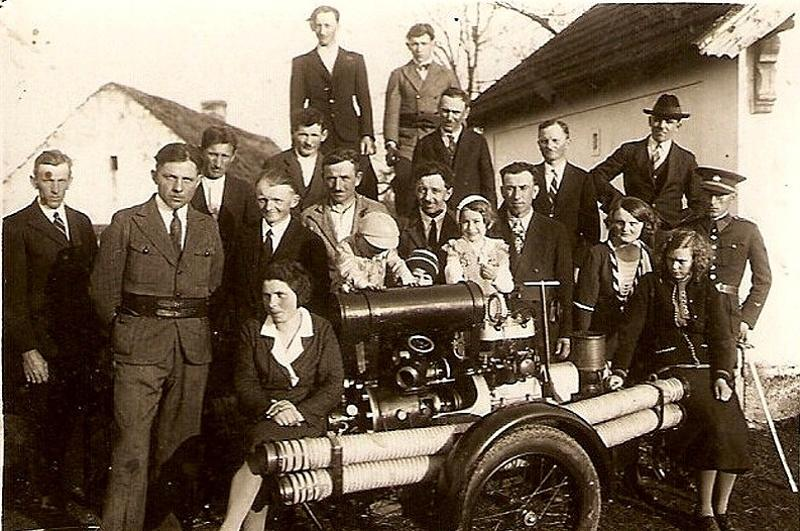
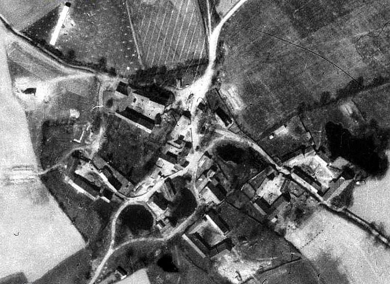

Hasičský sbor byl založen na ustavující schůzi 29. července 1906 v hostinci u Podojilů v Úklidě. Prvním starostou byl zvolen Karel Chocholoušek a velitelem Antonín Herán. Členy výboru Alojs Beneš a Josef Chocholoušek oba z Libíně, Antonín Pilík a František Podojil oba z Úklida a Jan Červenka z Rudolce. Schůzovní činnost probíhala střídavě v Úklidě u Podojilů a v Boru u Havlů, protože zde nebyla žádná hasičská místnost — a to celých 80 let.
Více o historii sboru
SDH Bor se každý rok pravidelně účastní hasičských soutěží ve všech kategoriích, v okrsku i mimo něj.

Před 16. stoletím patřily zdejší selské statky rytířům z Nového Dvora. Od roku 1623 ves náležela spolu s Nedrahovicemi a okolím ke Chlumci. „Berní rula“ chlumeckého panství připomíná odtud v roce 1654 tři grunty, jejichž majitelé patřili k nejstarším selským rodům na Sedlčansku.
Více o obci